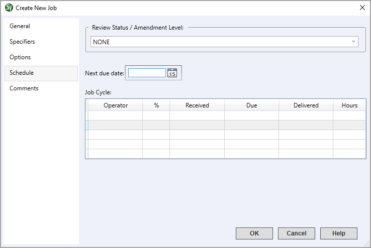

This command can also be executed from the SpecsIntact Explorer's Toolbar or by using the keyboard shortcut Ctrl+J.
The Schedule tab provides options designed to track the progression of your Job by recording the Review Status / Amendment Level, the Next due date, and the Job Cycle. Tracking can begin from a Job's creation and continues throughout its lifecycle. By maintaining this information, you can generate a comprehensive report from the recorded data on each tab and print it from any tab within the Job Properties whenever needed. This provides valuable insights for the project team during project status meetings.
 Click the tabbed commands on the image below to see how to use each function.
Click the tabbed commands on the image below to see how to use each function.

- Review Status / Amendment Level - Provides options to track and manage the design level of a project. This information is used to automatically generate the Job's PDF Files folders created when publishing the Job by organizing the PDF files in the appropriate folders (e.g., 35%, 65%, 95%) or amendment level (e.g., A, B, C, etc.).
- Next due date - Provides the flexibility to set the project's due date, which is an important component for project management, ensuring that all team members are aware of the final deadline.
- Job Cycle - Provides the options to meticulously track each stage of your project. Here you can record essential details like the operator, status level, received date, due date, delivered date, and optionally record the hours.
Standard Windows Commands
 The OK button will execute and save the selections made.
The OK button will execute and save the selections made.
 The Cancel button will close the window without recording any selections or changes entered.
The Cancel button will close the window without recording any selections or changes entered.
 The Help button will open the Help Topic for this window.
The Help button will open the Help Topic for this window.
How to Use This Feature
To Track and Manage Job Schedules:
- On the Schedule tab, below the Review Status / Amendment Level, perform one of the following:
- Select the drop-down arrow and select NONE, 30%, 60%, 90%, FINAL, or BID
- Place your cursor in the field and type a custom status (e.g., 35%, 65%, 95%) or amendment level (e.g., A, B, C, etc.)
- In the Next due date field, perform one of the following:
- Type the date in MM/DD/YY format
- Click the Calendar button and select a date
- Below the Job Cycle, perform the following:
- Double-click in the Operator field and type the operator's name
- Double-click in the % field and type the applicable status or amendment level
- Double-click in the Received field, type the date in MM/DD/YY format, or click the Calendar button and select a date
- Double-click in the Due field, type the date in MM/DD/YY format, or click the Calendar button and select a date
- Double-click in the Delivered field, type the date in MM/DD/YY format, or click the Calendar button and select a date
- Double-click in the Hours field, type the number of hours
- Click OK
Additional Learning Tools
 Watch the Tracking and Managing Job Schedules eLearning module within Chapter 8 - Additional Tools and Techniques.
Watch the Tracking and Managing Job Schedules eLearning module within Chapter 8 - Additional Tools and Techniques.
Users are encouraged to visit the SpecsIntact Website's Support & Help Center for access to all of our User Tools, including Web-Based Help (containing Troubleshooting, Frequently Asked Questions (FAQs), Technical Notes, and Known Problems), eLearning Modules (video tutorials), and printable Guides.